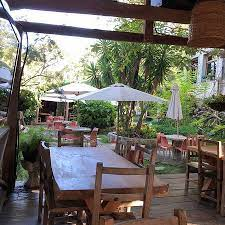

La Casita del Sabor es un restaurante familiar que se dedica principalmente a cuidar la salud de quienes los visitan y su principal mision es hacer que el cliente se sienta comodo y tranquilo ademas de que se encarga de no perder los alimentos que consumian antes nuestros adultos mayores alimentos saludables y frescos.
Conoce la Gastronomia de Los Andes una parte del Pueblito magico